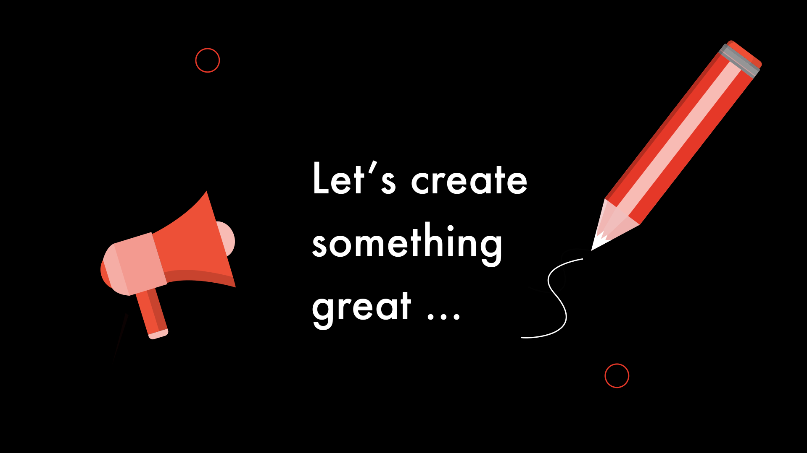

Branding

Creating my own personal brand has been key in all the projects I have been involved in so far, especially creating a Portfolio Website.
Skills: UI, Wireframing, Sketching, Branding
The Brief
To create my own personal brand including
- a monogram
- colour schemes
- icons
- a set of brand guidelines
Discover
I thought about different ways which I could create a monogram design, starting on paper.

Define and Develop
I narrowed it down to a few basic designs. This lead me to a refined sketch.

Outcome
I crafted icons which reflected the theme of my brand, and tied them to my core skills. (You can check them out on my portfolio page.)

The final product was a set of brand guidelines which reflect myself as a designer and a brand. I am proud of how these turned out, as I crafted the guidelines with no previous experience, and tried something outside of my experience as a very young UX Designer. In retrospect there are things which I would now be able to tackle a lot differently as my skills have developed through experience, but it is always a learning curve!